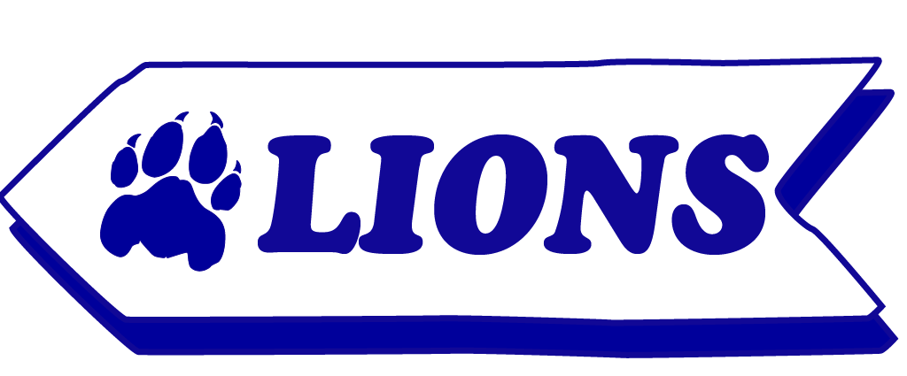

GIRAFFES
CORE MEMORY
WORKING WITH GIRAFFES
Going into the giraffe paddock and being able to feed them for the first time with Noah, one of the keepers that oversaw their care. We had to move them over to the other side of one of the holdings and it was just me and Desi alone for the longest time, as we tried to convince Buttercup to move over--he didn't in the end but it was still super cool!
THE GIRAFFES
A POEM OF REFLECTION
Grace and an abundance of spontaneity are present in every graceful glide of each stride. Gental beings full of personality in slow motion, but capable of more than meets the eye. A quiet presence in such massive height and a joy that's only communicated through understanding. They grow on you.

